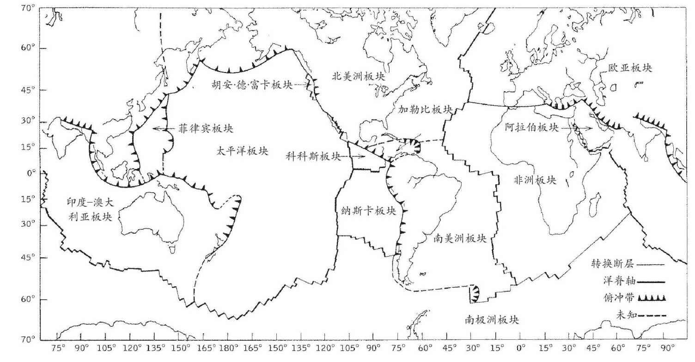
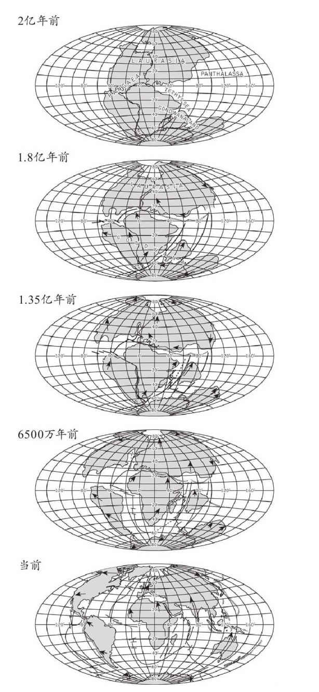
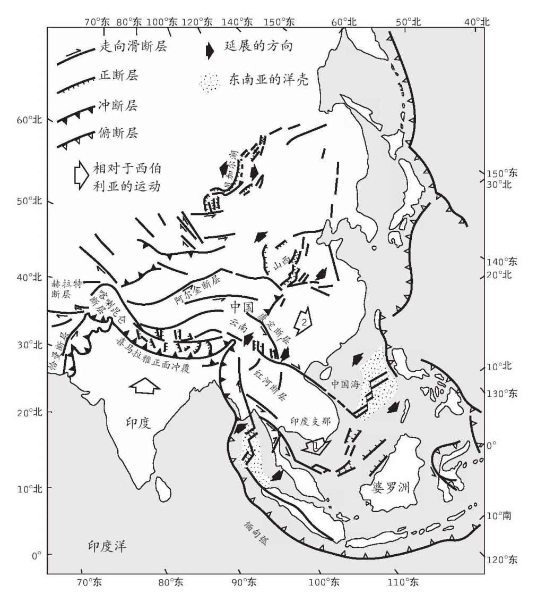
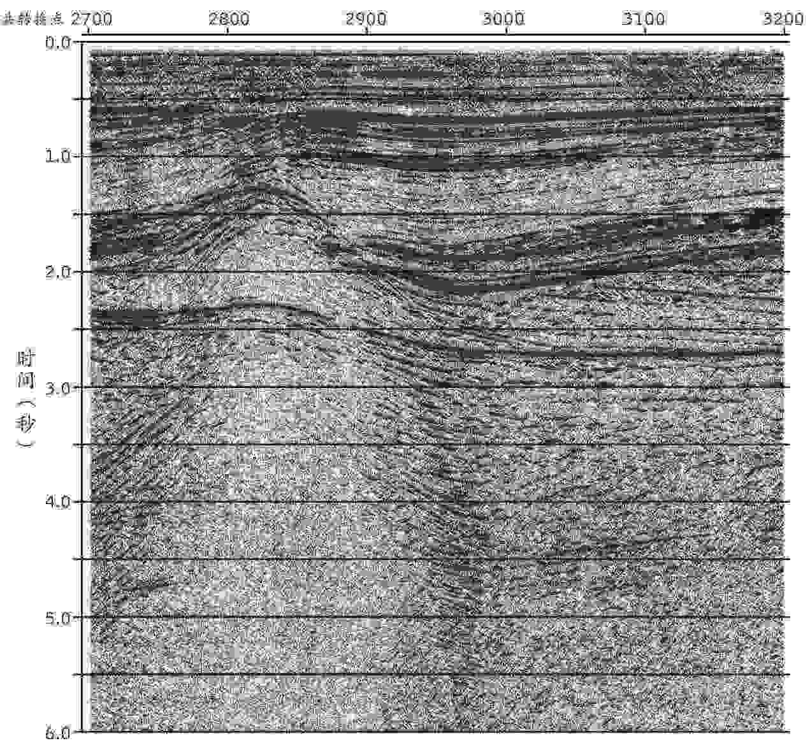

我小时候喜欢帮妈妈做橘子果酱。我承认，我现在还喜欢干这个，偶尔还会自己做。但如今每当我看着炖煮水果和糖的果酱锅，都禁不住觉得自己正在观望着我们所在的星球的演化，只是过程大大加速了，1秒钟大概相当于1000万甚至1亿年。果酱在小火上慢炖时会建立起对流圈，热气腾腾的橘子果酱团上升到表面，再四下散开。随之而来的是一些浮渣，那是些细小的糖沫，因为密度不够，无法再沉下去，只能聚集成片，漂在表面比较平静的地方。这些糖沫有点像地球上的大陆。它在整个过程的早期就开始形成，慢慢聚积变厚。其下的对流模式偶尔会发生变化，糖沫便分裂开来。有时候，浮沫会聚在一起，堆得更厚。当然，这样的类比应该适可而止。两者的时间尺度和化学作用都太不一样了；地质学家基本上不会在花岗岩中找到糖结晶，也不会在玄武岩中找到橘皮捕虏岩。但在考察地球的糖沫——大陆时，我们不妨把这个形象记在脑子里。
陆壳与海洋底部的地壳大不相同。洋壳的主要组成是硅酸镁，而陆壳中含有更高比例的铝硅酸盐。相对于地幔或洋底所含的密度更大的物质，陆壳中所含的铁比较少。这就是为什么陆壳能够漂浮，尽管它是在半固态的地幔之上，而非在液体中漂浮。陆壳还可能很厚。洋壳是相当均匀的7公里厚，但陆壳的厚度可达30-60公里甚至更厚。此外，像海洋岩石圈一样，陆壳之下也有厚厚一层冰冷坚硬的地幔。大陆的根基到底有多深至今仍是学界争论的焦点，该争论很可能会以界定性的结论告终。但大陆又有点像冰山：我们看到的不过是浮出水面的一角。大陆表面的山脉上升得越高，基本上它的根基也就下扎得越深。
得益于后见之明、有关地幔对流的知识和海底扩张的证据，我们很容易看到，在漫长的地质时期，大陆相对于彼此曾有过位移。但并非所有的证据都令人信服。虽然詹姆斯·赫顿提出了关于造山运动和岩石循环的理论，但任何原理的提出都需要很长时间。1910-1915年间，美国冰川学家弗兰克·泰勒 [28] 和德国气象学家阿尔弗雷德·魏格纳提出了大陆漂移的假说。但在当时，没有人能够想象大陆如何像船一样在看似固态的石质地幔上漂流。其后近半个世纪，大陆漂移的支持者一直是少数。然而该学说的少数支持者非常勤奋。南非的亚历克斯·杜托伊特积累了南非和南美洲之间类似的岩石结构的证据，英国地球物理学家阿瑟·霍姆斯则提出了地幔对流作为漂移的原理。直到1960年代，海洋学家们着手这项工作时，辩论才尘埃落定。哈里·赫斯指出，洋壳下的对流可能导致了海底从洋中脊向外扩张，弗雷德·瓦因和德拉姆·马修斯也提出了海底扩张的地磁证据。多亏有加拿大的图佐·威尔逊、普林斯顿大学的杰森·摩根和剑桥大学的丹·麦肯齐等人发表的论文，才将各方面的证据拼接起来，形成了板块构造学说。
板块构造用少量坚硬板块之间的相对位移、相互作用及其边缘的变形，对地球表面做出了解释。这并不是说大陆在自由漂移，而是它们被架在板块上，这些板块延展得很深，包括地幔岩石圈在内，通常厚达100公里。板块并不限于大陆，还包括洋底的板块。地球上一共有七个主要的板块：非洲、欧亚、北美、南美、太平洋、印澳，以及南极洲板块。还有一些小板块，包括环绕太平洋的三个相当坚固的小板块，以及板块接合之处的一些较为复杂的碎片。

图13 世界的主要构造板块及其边界
我的另一个童年记忆是在世界地图上寻找大陆，把它们剪下来，并试着把它们拼成一块大片的陆地。那一定发生在1965年图佐·威尔逊在《自然》期刊上发表论文那段时间前后。我还记得自己当时激动地发现这些大陆彼此相当吻合，并找到一些原因说明它们为何无法完美吻合。倒不是因为我剪得不够精细。每一个小书呆子都知道，应该沿着大陆架的边缘而不是沿着海岸线剪下大陆。可以切掉亚马孙河三角洲，否则它会与非洲重合，因为自从大陆分离之后那里又有了新的进展。更让人兴奋的发现是，北美洲和南美洲需要分开才能完美接合，西班牙则必须和法国分手。如果把西班牙转回去，就会在如今的比利牛斯山脉那里撞上法国。那么，这种大陆碰撞是否就是造成山脉的原因呢？
大概是在我青春期的时候，全家假期旅行时带我去了比利牛斯山和阿尔卑斯山。在一些地方，我看见那里的沉积岩层并不像其他受干扰较少的地区那样平整，而是皱巴巴的，像是叠起来的起伏不平的地毯。这把我的思绪又带回到橘子果酱那儿。炖果酱时要把一只瓷盘子放在冰箱里。每隔几分钟把它拿出来，在上面滴上几滴滚热的果酱。果酱冷却后，把手指按上去。如果果酱还是液体，那就舔舔手指头在一边等着，让它接着炖。但是过一会儿，果酱接近其凝固点时，放在盘子上的样品用手指一按就会起皱，就像大陆碰撞的缩微模型。对于巨大尺度上的大陆行为而言，这可是个不赖的模型。岩石重叠受到了难以置信的压力，还可能从下方被加热，在大陆碰撞的侧向力的影响下，会倾向于折叠而非破碎。受影响的巨石会受到重力的强大作用，因此，在自身重量的作用下，最险峻的褶皱会下垂成为过度褶皱，看上去就越发像软质奶油冰激凌或橘子果酱的外皮了。
从地图上剪下来的平面大陆不会彼此完美吻合的另一个原因是，它们所代表的应当是球体表面上的板块。在投影地图上，它们被扭曲了。但在球体表面滑动坚硬的板块也并非易事。简单的直线移动显然不行，因为球体上没有直线。每一点移动实际上都是沿着穿过球体的轴进行的转动。但还有其他难题。其一是在所有相互碰撞板块中找到一个参照物，其二是要将海底扩张的不同速率考虑在内。要研究大西洋的开放以及美洲从非洲和欧洲分离的相对位移，简单模型可能会调用一个类似地球自转轴的轴线。但那就要造出橘皮一样的大西洋洋壳，赤道位置较宽，朝着两极的方向均匀变窄。海底扩张的速率的确各不相同，但这一点无法直观展现。扩张的结果就是转换断层；这些数千公里长的地壳断裂有效调整了洋中脊片段的偏差。
有了海底扩张的证据和地幔对流的原理，板块构造学说迅速建立起来，成为现代地球科学的核心理论。但直至现在，仍有地质学家反对使用“大陆漂移”这一术语，因为它会让人联想到这一原理尚未得到正确解释且几乎无人信服的那段时间。然而，一旦人们准备好接受这一理论，过去的板块运动的证据便明确显现了。地质学证据可以证明同种类型的岩石分开后，如今位于一个大洋的相反两侧。现存生物和化石遗迹的证据亦可证明在过去的不同时期，不同的生物种群彼此隔离，有时还能够在大陆间穿越。例如，澳大利亚与亚洲的某些部分，如马来西亚和印度支那，分开至今也不过两亿年。从那时开始，这两片大块陆地上的哺乳动物各自独立演化，结果是有袋类动物在澳大利亚占据了主要地位，而有胎盘的哺乳动物在亚洲得以发展。
我们在上一章讨论过洋底玄武岩中有地磁反转的证据，同样，地磁证据也提供了昔日大陆运动最全面的画面。在火山岩凝固时像微小的罗盘指针一样被圈闭其中的磁性矿物颗粒，记录着当时北极的方向。它们不仅显示了磁场本身的小摆动和大逆转，还描绘出千万年甚至数亿年间更广范围内的大型曲线系列，即所谓的磁极迁移曲线。这实际上正是大陆本身相对于磁极如何位移的图示。在比较不同大陆的曲线时，有时会看到它们一起移动，有时又分道扬镳，看到各个大陆本身分离、漂流，又重聚，翩然跳出一支大陆圆舞曲。实际上，这更像是一支笨拙的谷仓舞，因为大陆步履凌乱，有时还会撞在一起。
灵敏的仪器甚至可以跟踪当今大陆的相对位移。在短距离内，比如局部跨越板块边界的地方，测量技术可以做到非常精确，尤其是激光测距。但如今人们也可以通过太空完成整个大陆级别的测量。某些有史以来发射的最奇特的空间卫星就是用作激光测距的。这种卫星有一个由钛等致密金属组成的球体，上面镶嵌了很多猫眼一样的玻璃反射器。这些反射器能够原路反射向其射来的光线，因此，如果从地面射出一束精密的强力激光，并原地记录反射脉冲的时间，就可以算出精确到厘米的距离了。比较来自不同大陆的数值，就能看到年复一年，它们发生了怎样的位移。利用来自遥远宇宙的无线电波作为参照系，天文学家可以用射电望远镜进行同样的测量。现在，美国军方GPS（全球定位系统）卫星已经取消扰频设置，地质学家在野外使用小型手持GPS接收器即可达到相似的精度。细致使用多种读数的话，精度甚至可以提高到毫米级。答数证实了海底扩张速度的证据：板块相对位移的速度大致相当于手指甲的生长速度，即每年大约3-10厘米。
当然，所有这些板块运动的测量都是相对的，人们很难为所有的测量建立一个整体的参照系。夏威夷出现了一个线索。夏威夷的大岛 [29] 是一系列火山洋岛中最后出现的，这些火山洋岛向西北方向延展，继而潜入水下，形成天皇海山链。玄武岩的地质日期显示，越往西北方向去，当地的玄武岩就越古老。这个岛链似乎标记着一个通道，太平洋板块经这里横越其下一个充满地幔热物质的地柱。将此地幔柱的历史位置与其他地幔柱加以比较，就会看到它们之间几乎没有什么相对位移；如此一来，这类地幔柱或许可以作为基准点，因为其下的地幔几乎没有过什么变化。至于以此为参照系的绝对板块运动，对它们的估计显示，西太平洋移动得最多。与之相反，欧亚板块几乎没有移动，因此，历史上选择格林尼治作为经度的基准点，或许有其合理的地质学依据！
将地质学和古地磁学的证据结合起来，就能通过地质时间来回溯构造板块的运动。我们如今看到的大陆是由一块超大陆分裂而来的，这块超大陆被命名为联合古陆。在大约两亿年前的二叠纪时期，超大陆分崩离析，起初形成了两个大陆：北面的劳亚古陆和南面的冈瓦纳古陆。那些大陆的分裂至今仍在继续。但回溯到更加久远的过去，联合古陆本身似乎是由更早时期的多个大陆集聚形成的，再向前回溯，曾经存在过一个更为古老的超大陆，名叫潘诺西亚大陆，而在它之前的超大陆叫罗迪尼亚大陆。这些超大陆分裂、漂移再重新集聚的周期被称为威尔逊周期，得名于图佐·威尔逊。
再回溯到前寒武纪，时间越久远，画面就变得越模糊，也就越难辨认出我们如今所知的大块陆地。例如，在大约4.5亿年前的奥陶纪时期，西伯利亚靠近赤道，大块陆地大多聚集在南半球，现在的撒哈拉沙漠当时则靠近南极。在前寒武纪后期，格陵兰和西伯利亚在距离赤道很远的南方，亚马孙古陆几乎就在南极，而澳大利亚却完全位于北半球。
就如此长距离的漂移而言，当前的纪录保持者之一显然是亚历山大岩层这块陆地。它现在形成了阿拉斯加狭地的大部分。大约5亿年前，它曾经是东澳大利亚的一部分。岩石中的古地磁学证据包括水平面沉向地球的倾斜度，这显示了岩石形成之时的纬度。倾角越小，纬度越高。其他线索来自锆石矿物的微小颗粒。它们携带着放射性衰变的产物，后者记录了它们形成之时的构造活动时期。就亚历山大岩层来说，它们显示了两个主要的造山期，分别是5.2亿年前和4.3亿年前。在这两个时期，东澳大利亚都是造山的发生地，而北美洲却一派平静。相反，北美洲西部在3.5亿年前十分活跃，那时的亚历山大岩层却似乎处在休眠状态。3.75亿年前，亚历山大岩层开始从澳大利亚分离出来，形成了一个水下的海洋高原，彼时有各种海洋动物在那里形成化石。

图14 2亿年来的地球大陆变迁图
大约2.25亿年前，亚历山大岩层开始以每年10厘米的速度向北方移动。这一过程持续了1.35亿年，在那段时间，随着亚历山大岩层抵达当前的纬度并与阿拉斯加发生碰撞，北美洲的化石也开始出现了。甚至还有可能该岩层在行程中与加州海岸擦肩而过，从加州马瑟洛德淘金带刮掉了一些物质。如果情况果真如此，那么阿拉斯加淘金潮跟加州淘金潮赖以采掘的或许都是同样的岩石，只不过位置北移了2400公里而已。
我们听说过几种不同类型的板块边界。有洋中脊的扩张中心、与洋脊垂直的转换断层，以及海洋岩石圈插入大陆下方的潜没带等等。所有这些都是相对狭窄、界定清晰的地带，用简单图表便可相对容易地理解和解释。但还有一种更加复杂的板块边界，坚硬板块的构造学说无法解释这一现象，那就是陆内碰撞。涉及洋壳的则相对简单。只要洋壳够冷，其密度就足够致密，保证其以相对陡峭的约45°角沉入地幔。陆壳不会下沉，它们像在海中漂浮的软木塞一样始终保持漂浮状态，无惧拍打过来的惊涛骇浪。陆壳也比海洋岩石圈更容易变形。因此，当大陆碰撞时，那情形更像是一场严重的交通事故。
印度接合亚洲的过程就是一个很好的例子。在那以前的数亿年，印度一直在南半球参演一场复杂的土风舞，在场的其他舞者包括非洲、澳大利亚和南极洲。其后，大约1.8亿年前，印度分离出来，开始向北方漂移。印度西侧有一些非常壮观的山脉，即西高止山脉和德干地盾。这些山脉共有一个奇怪的特征：尽管海洋就在西面的不远处，但主要的大河仍然把这些山脉中的水排向东方。巴黎大学的文森特·库尔蒂耶教授开始研究组成这些山峦的玄武岩中的古地磁时，还遭遇了另一个谜题。他曾在喜马拉雅山脉研究经年，希望能与更南方的样本进行比较。他本以为会在厚厚的玄武岩地层中找到历时数百万年、跨越多个古地磁反转的古地磁数据。但事与愿违，他发现那些岩石的磁极都是同向的，这表明它们一定是在最多100万年这样一个短暂时期内喷发出来的。牛津大学的基思·考克斯和剑桥大学的丹·麦肯齐对其间的过程得出了较为肯定的结论。印度曾经是个体量更大的大陆，在向北漂移的路上，它穿越了一个当时正值岩浆喷发期的地幔柱。这导致印度大陆的隆起。但德干地盾刚好在这块穹地的东侧。西侧是上坡，河流无法西去。难以想象的火山喷发在数千年时间里生成了数百万立方公里的玄武岩。最终，火山活动把大陆一分为二。我们如今知道的印度次大陆只是原大陆的东北部分。海下的其余部分则躺在塞舌尔群岛与科摩罗群岛之间巨大的玄武岩积层上。事实上，这一火山流泻发生在大约6500万年前的白垩纪/三叠纪分界线前后，包括恐龙在内的很多动物种群也是在此期间灭绝的。也许杀死它们的根本不是某颗小行星，而是这些惊人的火山喷发所导致的污染和气候变化。
在此期间，次大陆的其余部分继续北移，封闭了特提斯洋的巨大洋湾，最终撞进亚洲。虽说特提斯洋的海洋岩石圈质地致密，可以潜没进亚洲下面的地幔，但陆壳却不能如此。这两个大陆的首次接触是在大约5500万年前，但其中一个大陆以巨大的动能在其轨道上不顾一切地前行，简直没有什么可以阻止。封闭的速度大约为每年10厘米，后来逐渐降到了每年5厘米左右，但从那时至今仍在继续碰撞，就像电视上慢速回放的车辆撞毁试验。在此期间，印度次大陆又继续向北行进了2000公里。首先发生的是沉积物的堆叠，以及随着印度大陆板块楔入亚洲之下，一系列潜没断层的地壳随之变厚，像是在推土机前垒起一堆碎石。这层厚厚的大陆物质使得喜马拉雅山脉至今仍在上升。

图15 东南亚构造图，显示了印度次大陆碰撞以及中国和印度支那被挤向一侧的运动所导致的主要断裂
向北穿越平坦的恒河平原，我们能看到第一个巨型逆断层形成了当地的一个明显特征。山峦上的沉积物随处可见，这些沉积物曾经淤积在河床上，但现在被抬升了数十米，不过它们只有几千年的地质年龄，表明这样大幅度的抬升是在数次地震中突然发生的。这些山峦是喜马拉雅山脉的山麓小丘，喜马拉雅山脉在一系列东西走向的山脉中崛起。每一条山峰线都大致对应着另一个大陆岩石的巨型楔入。如今暴露在喜马拉雅山脉表面的岩石大都是从大陆深处抬升上来的远古花岗岩和变质岩。从特提斯洋的洋底提升上来的褶皱沉积物则长眠在西藏高原边缘山脉的北方。在它们之后是一系列湖泊，它们对应着两块大陆的初始接合处，也就是所谓的地缝合线。
印度这样一个古老冰冷的大陆非常结实，而且相当坚硬。它所碰撞的亚洲部分则相对年轻和柔软。就像炙热的地幔可以经历固体流一样，地壳岩石也可如此。我们在地表看到岩石时，认为它既硬又脆，但石英等地壳矿物在仅仅数百摄氏度条件下就可以像太妃糖一样流动，地幔更深处的橄榄石也是一样。如果将印度看作相对坚固的大陆，与具有很多液体特性的另一方相撞，就能得到一些印度碰撞亚洲的最佳模型了。要说这另一方像液体，不如说它像半凝固的颜料——越用力挤压，它就越容易变形。这类模型可以解释中亚山脉的格局，却无法解释西藏高原的情形。
密度相对较低的地壳岩石的堆叠，无法只靠向下的逆冲推覆作用来调节，因而整个区域开始向上浮动。西藏地下致密的岩石圈根部与之分离，并沉回到其下的软流层。余下的日益加厚的大陆岩石向上浮动，将西藏高原抬升了8公里之高。与此同时，亚洲的一部分试图滑行让路，印度支那滑到了东面。这一侧向动作把大陆朝着更远的北方延展，造就了很多地貌特征，其中就包括西藏地区充满湖水的裂口和俄罗斯境内贝加尔湖的深纵裂口。随着地下冰冷致密的岩石圈部分移开，炙热的软流层距离西藏地壳就更近了，足以导致局部的熔融，也解释了西藏部分地区近来发现的火山岩。另有地震学证据表明，西藏高原西南部地下约20公里处有一个部分熔融的庞大花岗岩池。这也有助于解释亚洲如何吸收了来自印度的冲击，以及尽管西藏高原被高耸的山脉围绕，为何它本身还能保持相对平缓。总之，西藏高原看来不大可能会比当前平均5000米海拔更高了。再有任何抬升都会被物质向两侧流动的动作所抵消。多山地区的平均海拔也多半不会超过5000米。在这里，高度被侵蚀所制约。尽管喜马拉雅山脉已经有大量物质被侵蚀，巴基斯坦北部的南伽帕尔巴特峰等地区如今仍以每年若干毫米的速度上升，致使山坡变得崚嶒崎岖，并容易发生滑坡。
喜马拉雅山脉的高度几乎相当于客机正常的飞行高度，这些山脉对大气循环构成了明显的障碍。因此，北面的中亚地区冬季寒冷，且全年大部分时间气候干燥。夏季，西藏高原升起的暖空气阻止了来自西南方的潮湿空气，因而云层堆积，并在印度季风的暴雨中释放其水分。季风在阿拉伯海兴风作浪，把养分带到表层水，从而导致浮游生物一年一度的繁殖期，继而在水下的沉积物中留下了痕迹。沉积物岩芯显示，这一循环始于大约800万年前，或许正对应着西藏高原大抬升的末期和季风气候形态的源起。在中国，乘风而来的尘埃显示，喜马拉雅山脉北部地区也是在这一时期才开始变得干燥。非洲西海岸之外的沉积物也有变化，随风而来的尘埃在地层中有所增加；与其相对应的似乎是非洲开始变得干燥，以及随着潮湿的云层被拉向印度，撒哈拉沙漠开始形成。有一种理论认为，在喜马拉雅山脉被侵蚀的过程中必定发生了大量的化学风化作用，消耗了大气层中的大量二氧化碳，这可能为过去2500万年各次冰川期的出场做好了铺垫。这么说来，我们知道是非洲的气候变化造就了物种演化的压力，导致现代人类在那里得到发展，或许那次气候变化的原因之一就是西藏和喜马拉雅山脉的崛起。
从喜马拉雅山脉的大陆堆叠再向西，特提斯洋收窄成一个水湾，但在意大利和非洲板块与欧洲碰撞的例子中，碰撞的结果差别不大，只不过后者是略小一些的版本而已。阿尔卑斯山脉是学界研究最多、理解最深的山脉之一。在阿尔卑斯山脉北面有一个沉积盆地，其中慢慢地填满了名为磨砾层的沉积物。山脉南面的意大利境内有一个波河平原，相当于印度的恒河平原。波河平原与山脉之间是一系列的沉积楔，这种沉积物叫作复理石，是由特提斯洋舀取而来的。随后我们来到了瑞士境内高耸的阿尔卑斯山，它由大陆的结晶质基部以及下方部分熔融的花岗岩侵入体共同组成。越过高山，会看到一系列强烈褶皱的岩石，这些岩石被舀取出来，形成巨大的倒转褶曲，名为推覆体，它们折向北方，因为自身的重量而下垂，像搅打过的奶油被舀起来那样。这些推覆褶皱往往延展得很远，以至于地质年龄更加古老的岩石会堆叠在年轻岩石的上方，形成令人非常困惑的序列。与喜马拉雅山脉一样，那里也有一系列逆断层，在很多地方使得大陆地壳的厚度加倍。
没有哪个大陆是孑然孤立的岛屿。各个大陆既可分离，也可连接合并。这一结论已屡经验证，阿尔卑斯山脉和喜马拉雅山脉等现代山脉只是最近发生的几个实例而已。其他山脉因为过于古老，经年累月，几乎已被夷为平地。苏格兰西北的加里东山脉和北美洲的阿巴拉契亚山脉也可作为例证，只不过时间要追溯到大约4.2亿年前，大西洋的某个先驱封闭之时。现代大陆都是处处显现出这种特征的百衲被。然而随着大陆变得越古老越厚重，它就会越坚硬，也越持久。受构造运动影响最小、最稳定的大陆核心被称作克拉通，它们组成了当今南北美洲、澳大利亚、俄罗斯、斯堪的纳维亚和非洲的核心。久而久之，它们也常常会经历缓慢的下沉。澳大利亚的艾尔湖和北美洲的五大湖就位于这样的盆地。与之相反，南部非洲的克拉通却已被其下地幔柱的浮岩抬升了。
地震层析成像揭示了整个地球的结构，应用同样的原理也可以巨细靡遗地研究大陆的内部深处。为得到所需的高分辨率，这一技术并不依赖地球另一侧发生的随机自然地震（需要间隔很远的测震仪才能探测到它们），而是自行产生人工地震波，利用附近间隔紧密的探测仪矩阵来拾取反射波。地震层析成像造价昂贵，起初被石油勘探公司所垄断，这些公司小心翼翼地守护着探测结果。但如今很多国家项目都在共享这类数据。其中最先进的当属北美洲，美国的大陆深度反射剖面协会和加拿大的岩石圈探测计划均已建立起详细的剖面图系列。为了产生震波，他们使用一个小型的专用卡车车队，利用水锤泵带动重型金属板来震动地面。绵延数英里的传感器网络监测这些深度震动，并记录来自地下许多地层的反射。计算机分析可以显示出每一个不连续面或密度突变。这些剖面图远比石油勘探者最感兴趣的沉积盆地还要深得多。它们显示了在很久以前合并的各个大陆之间的远古缝合线，还显示出沉降到加拿大苏必利尔湖地区下方地幔中去的一个地层的反射，它很可能是迄今发现的最古老的潜没带，其洋底属于一片早已消失的海洋，地质年龄大约为27亿年。这些剖面图显示出从地幔上升却无法穿透厚重大陆的玄武岩岩浆如何在大陆之下铺垫玄武岩石板，即所谓的岩墙；还显示了当大陆岩石被埋得足够深时，它们是如何开始熔融，从而上升穿过大陆，重新结晶成为花岗岩的。

图16 地球地壳内的各地层和一个穹地结构的地震反射剖面图示例
随着大陆岩石的堆叠，大陆的基底也被越埋越深。大陆下沉时被加热，基底的岩石开始熔融。这些岩石中很多都是数十亿年前沉积在海底的远古沉积物。它们含有与岩石化学结合的水。水有助于岩石的熔融，并有润滑作用，使它们容易上升到表面。与火山岩不同，它们过厚过黏，无法从火山中喷发出去。相反，熔融岩石的巨大气泡或达数万米之巨，向上推进更高层的大陆地层，速度也许相当快。它们炙烤着周围的岩石，缓慢冷却后形成由石英、长石和云母组成的粗糙结晶岩：花岗岩。最终，周围的岩石逐渐磨损，露出壮观的花岗岩穹隆，达特穆尔高地 [30] 即是一例。
对一个由硅酸盐岩石和大量的水组成的、构造运动活跃的星球而言，花岗岩的形成或许是不可避免的。但绝不会出现一个没有大陆而只有环球海洋的“水世界”。只要有水，它就会设法参与岩石的化学过程，在它们熔融之时提供润滑，以便它们能够以大块花岗岩的形态上升，形成大陆的顶峰高出海面。如果没有水，那就是金星上的情形了：没有板块的大地构造。如果没有熔融岩浆的内火，就是火星上的情形：古老冰冷的地表，即使有生命，也深藏在地下。在地球上，海洋和大陆始终处于动态的相互作用中，有时这种相互作用是你死我活的。
地质勘探最初的动机之一便是寻找矿藏。若干地质过程可以形成或浓缩出珍贵而稀有的物质。地球的热量可以温和加热沉积盆地的生物遗迹，从而生成煤炭、石油和天然气。我们已经看到了深海热液喷溢口周围何以富集贵金属硫化物，也看到了锰结核在深海洋底形成的过程。矿物以多种方式在大陆岩石中富集。在熔融的岩石中可以形成结晶，其中密度最大的会沉到熔体腔的底部。在聚集矿物质的同时，上升并穿过其他岩石的熔融岩石团块会驱使超热的水和蒸汽先行上升。在压力下，这种水汽混合物可以溶解多种矿物，特别是那些富含金属的矿物，并推动它们穿过裂缝，那些裂缝曾是它们作为矿脉的寄身之所。其他矿物会在水分蒸发或岩石中的其他组分受到侵蚀时在岩石表面浓缩。只要我们拥有使之再生的技术，地球中的宝藏就唾手可得了。
如果说在地球历史的大部分时期，大陆浮沫一直都聚集在地球表面，那它是从何时开始的？第一块大陆在哪里？这还很难说。最古老的大陆岩石经过改造、折叠、断裂、掩埋、部分熔融、再度折叠和断裂，被新生侵入岩渗透。此过程是如此漫长复杂，以至于很难清楚地解释，简直有点像从垃圾场的压实废料中辨认某一辆车的残骸。但寻找地球上最古老岩石的探索恐怕已经接近尾声。第一批竞争者中有些来自南非的巴伯顿绿岩带。这些岩石的地质年龄超过35亿年，但它们是枕状熔岩和洋岛的残留物，而不是大陆岩石。如今，人们在澳大利亚西部的皮尔巴拉地区找到了相似的岩石，格陵兰西南部也有距今37.5亿年的岩石，但这些也是海洋火山岩。第一块大陆的最佳候选者长眠在加拿大北部腹地。在耶洛奈夫镇 [31] 以北大约250公里无人居住的不毛之地，靠近阿卡斯塔河的位置，孤零零地立着一个工棚，里面装满了地质锤和野营装备。门上方有一个粗糙的标牌：“阿卡斯塔市政厅，建于40亿年前。”附近某些岩石的地质年龄已逾40亿年。
那些岩石之所以泄露了自身年龄的秘密，要多亏在其晶格中圈闭了铀原子的锆石矿物颗粒，铀原子经过衰变，最终变成了铅。这些颗粒难免会因为再熔化、后期生长，以及宇宙射线损伤而受到影响，但澳大利亚研发的一种名为“高灵敏度高分辨率离子探针”的仪器，可以使用氧离子窄射束来轰击锆石的微小部分，以便对颗粒的不同区域单独进行分析。某些颗粒的中心部分显示其地质年龄高达40.55亿年，使得它们荣膺地球上最古老岩石的称号，并以自身的存在证明了地球形成不到5亿年即出现了大陆这一结论。
但仍有诱人的证据表明，还有些历史更为久远的老古董。在澳大利亚西部，珀斯市以北大约800公里的杰克山区有砾岩岩石，这是大约30亿年前的圆形颗粒和小鹅卵石固结在岩石中的混合物。在岩石的颗粒中间有锆石，这一定是更早期的岩石受到侵蚀而析出的。其中一颗测出的地质年龄是44亿年，而对结晶中氧原子的分析表明，当时的地表一定冷得足以让液态水凝结。这一研究表明，有些大陆出现的时间早得远超任何人的想象，它们在地球吸积的数亿年间就已出现；人们原以为当时的地球是个部分熔融、不适于居住的世界，看来这些发现也提出了与之相反的证据。
本章大部分篇幅都用来回望昔日的大陆圆舞曲了。但大陆仍在移动，那么在接下来的5000万年、1亿年甚或更远的未来，世界地图将会变成什么样？首先，合乎情理的假设是事物会沿着其当前的方向继续发展。大西洋会继续加宽，太平洋会收缩。曾经封闭特提斯洋的过程也会继续，阿尔卑斯山脉与喜马拉雅山脉之间的危险地带会发生更多的地震和山体抬升。澳大利亚会继续北移，赶上婆罗洲，继而转个圈撞上中国。在更远的未来，某些运动或许会反转。我们知道，大西洋的某个前身曾经开放过也封闭过，那么大西洋的洋壳最终会冷却、收缩，并开始再次下沉，或许会潜没到南北美洲的东岸下面，这些可能都无法避免。随后这些大陆会再度聚成一团。得克萨斯大学阿灵顿分校的克里斯托弗·斯科泰塞 [32] 预测，2.5亿年后会出现一个全新的超大陆——终极联合古陆，其间可能会有一个内陆海，那一切都将会是曾经不可一世的大西洋留下的遗物。